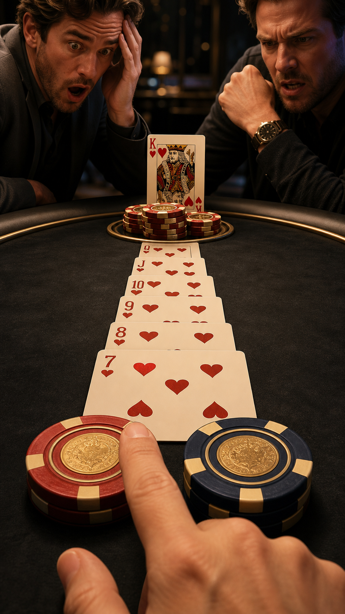

Visuelles Veto
Spielbarer Trailer
Casino-Chips, Goldlicht und Schauspielgesten machen daraus genau das austauschbare Pokerbild, das wir vermeiden wollen.
Behalten: Der Spieler setzt früh selbst einen Einsatz und erlebt sofort eine Reaktion.
Neu bauen: nur mit realen Poch-Assets, normaler Körperlichkeit und glaubwürdigen Reaktionen.